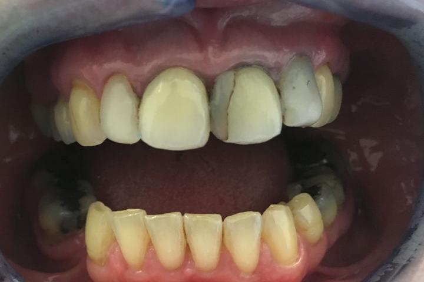
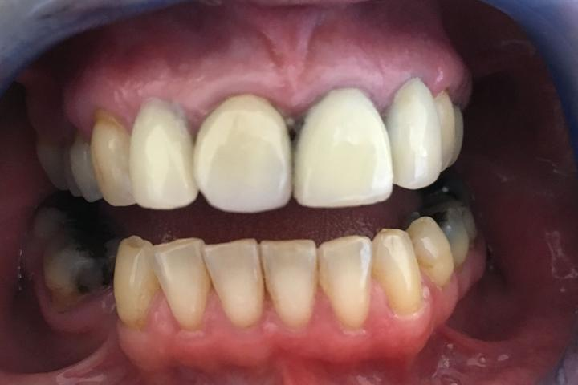

Case 01
Porcelain veneers on the upper front teeth
- Can help with
- Discoloured, chipped or slightly crooked front teeth
- Visits
- At least two: one to prepare the tooth and match the shade, one to fit
- Cost
- Veneers from £350
We show you the veneer on your tooth before we bond it, so you can check you’re happy with it.